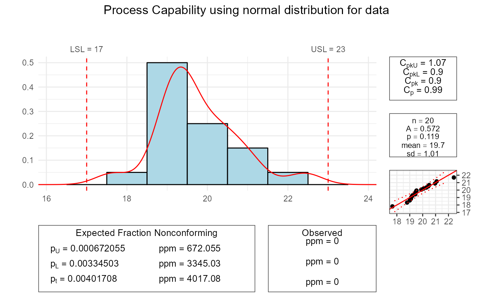
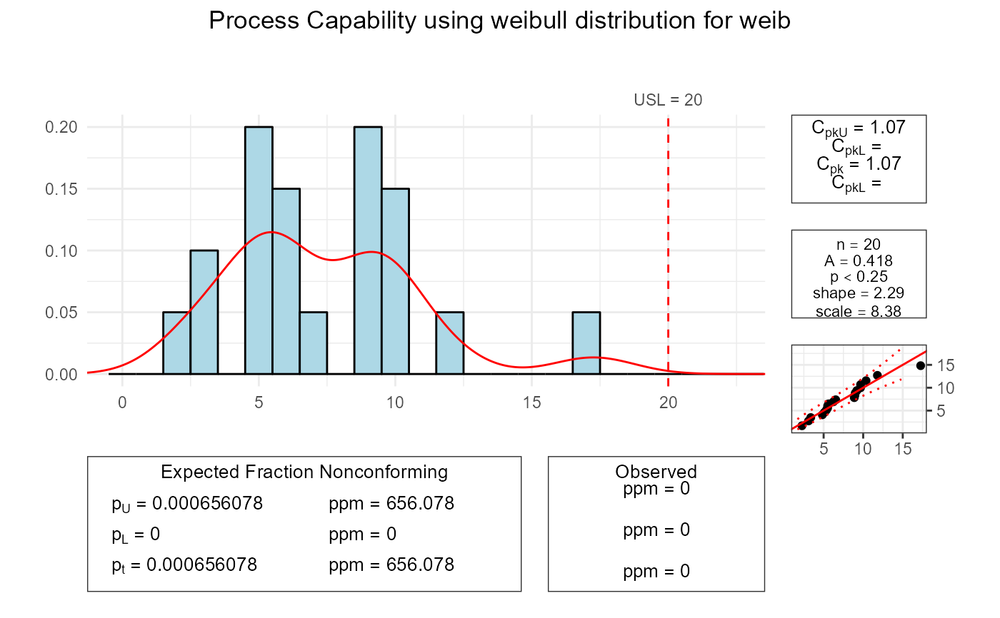

Calculates the process capability cp, cpk, cpkL (onesided) and cpkU (onesided) for a given dataset and distribution.
A histogram with a density curve is displayed along with the specification limits and a Quantile-Quantile Plot for the specified distribution.
Lower-, upper and total fraction of nonconforming entities are calculated. Box-Cox Transformations are supported as well as the calculation of Anderson Darling Test Statistics.
Usage
pcr(
x,
distribution = "normal",
lsl,
usl,
target,
boxcox = FALSE,
lambda = c(-5, 5),
main,
xlim,
grouping = NULL,
std.dev = NULL,
conf.level = 0.9973002,
bounds.lty = 3,
bounds.col = "red",
col.fill = "lightblue",
col.border = "black",
col.curve = "red",
plot = TRUE,
ADtest = TRUE
)Arguments
- x
Numeric vector containing the values for which the process capability should be calculated.
- distribution
Character string specifying the distribution of
x. The functioncpwill accept the following character strings fordistribution:`normal``log-normal``exponential``logistic``gamma``weibull``cauchy``gamma3``weibull3``lognormal3``beta``f``geometric``poisson``negative-binomial`
By default
distributionis set to`normal`.- lsl
A numeric value specifying the lower specification limit.
- usl
A numeric value specifying the upper specification limit.
- target
(Optional) numeric value giving the target value.
- boxcox
Logical value specifying whether a Box-Cox transformation should be performed or not. By default
boxcoxis set toFALSE.- lambda
(Optional) lambda for the transformation, default is to have the function estimate lambda.
- main
A character string specifying the main title of the plot.
- xlim
A numeric vector of length 2 specifying the x-axis limits for the plot.
- grouping
(Optional) If grouping is given the standard deviation is calculated as mean standard deviation of the specified subgroups corrected by the factor
c4and expected fraction of nonconforming is calculated using this standard deviation.- std.dev
An optional numeric value specifying the historical standard deviation (only provided for normal distribution). If
NULL, the standard deviation is calculated from the data.- conf.level
Numeric value between
0and1giving the confidence interval. By defaultconf.levelis0.9973(99.73%) which is the reference interval bounded by the 99.865% and 0.135% quantile.- bounds.lty
graphical parameter. For further details see
ppPlotorqqPlot.- bounds.col
A character string specifying the color of the capability bounds. Default is "red".
- col.fill
A character string specifying the fill color for the histogram plot. Default is "lightblue".
- col.border
A character string specifying the border color for the histogram plot. Default is "black".
- col.curve
A character string specifying the color of the fitted distribution curve. Default is "red".
- plot
A logical value indicating whether to generate a plot. Default is
TRUE.- ADtest
A logical value indicating whether to print the Anderson-Darling. Default is
TRUE.
Value
The function returns a list with the following components:
The function pcr returns a list with lambda, cp, cpl, cpu, ppt, ppl, ppu, A, usl, lsl, target, asTest, plot.
Details
Distribution fitting is delegated to the function FitDistr from this package, as well as the calculation of lambda for the Box-Cox Transformation. p-values for the Anderson-Darling Test are reported for the most important distributions.
The process capability indices are calculated as follows:
cpk: minimum of
cpKandcpL.pt: total fraction nonconforming.
pu: upper fraction nonconforming.
pl: lower fraction nonconforming.
cp: process capability index.
cpkL: lower process capability index.
cpkU: upper process capability index.
cpk: minimum process capability index.
For a Box-Cox transformation, a data vector with positive values is needed to estimate an optimal value of lambda for the Box-Cox power transformation of the values. The Box-Cox power transformation is used to bring the distribution of the data vector closer to normality. Estimation of the optimal lambda is delegated to the function boxcox from the MASS package. The Box-Cox transformation has the form \(y(\lambda) = \frac{y^\lambda - 1}{\lambda}\) for \(\lambda \neq 0\), and \(y(\lambda) = \log(y)\) for \(\lambda = 0\). The function boxcox computes the profile log-likelihoods for a range of values of the parameter lambda. The function boxcox.lambda returns the value of lambda with the maximum profile log-likelihood.
In case no specification limits are given, lsl and usl are calculated to support a process capability index of 1.
Examples
set.seed(1234)
data <- rnorm(20, mean = 20)
pcr(data, "normal", lsl = 17, usl = 23)
#> Scale for x is already present.
#> Adding another scale for x, which will replace the existing scale.
#>
#> Anderson Darling Test for normal distribution
#>
#> data: data
#> A = 0.5722, mean = 19.749, sd = 1.014, p-value = 0.1191
#> alternative hypothesis: true distribution is not equal to normal
#>

set.seed(1234)
weib <- rweibull(20, shape = 2, scale = 8)
pcr(weib, "weibull", usl = 20)
#> Scale for x is already present.
#> Adding another scale for x, which will replace the existing scale.
#>
#> Anderson Darling Test for weibull distribution
#>
#> data: weib
#> A = 0.4183, shape = 2.290, scale = 8.382, p-value <= 0.25
#> alternative hypothesis: true distribution is not equal to weibull
#>
